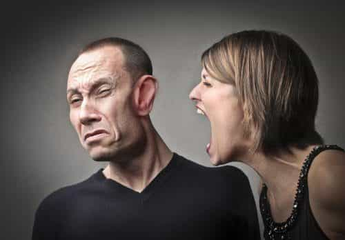
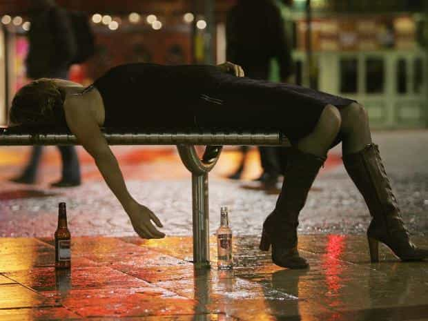
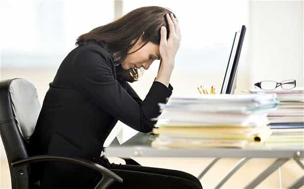

Corey is an iconoclast and the author of 'Man's Fight for Existence'. He believes that the key to life is for men to honour their primal nature. Visit his new website at primalexistence.com


By all measures that feminists like to tout, Western women today have more rights, more freedom, more choices, and more privilege than any other time in human history. Considering how women are favored to be CEOs to meet “gender diversity” quotas, have much greater hiring preference over men in STEM field, are able to divorce and extort men using the state, and can ruin any man with false accusations, we can even say that women are now the new privileged class.
But in spite of it all, women today are actually less happy than their ancestors whom the feminists perceive as having been “oppressed,” and furthermore, many are becoming increasingly unstable, violent, and toxic as they poison themselves with the toxic ideology that is feminism.
The following points will show how feminism actually damages today’s women rather than help them.
If feminism is so great, why are most feminists so angry and miserable?
Women infected by feminism hold so much anger that it is etched onto their faces. In fact, spewing hatred for men seems to be the only thing that makes them feel good about their own empty lives. It’s no wonder they like to come to our website to spew some of the most hideous insults, violent threats, and rampant sexist verbal abuse for merely having different opinions.

Women are strong and independent according to feminists. But that’s until when it’s time to blame men for all their personal and social problems. Since they feel entitled to have men behave the way they want them to and cater to all their needs, it’s natural that the “misogynists” should be scapegoated if anything goes wrong their own lives. Feminism, not so ironically, seems to erase women’s sense of internal locus of control.
Modern women barely even respect themselves. They are careless with their life choices, indulge in destructive hedonism of alcohol and sex, go out of their way to purposely destroy their looks, and so on. Yet, they expect men to offer them unconditional respect just because they’re born women. You don’t deserve respect because you’re a loud-mouthed feminist, you have to earn it like everyone else.
Feminism teaches women that femininity is sexist and oppressive, so it’s no surprise that many young women today are purposely making themselves look ugly and behave in a disgusting manner just to shock and offend people to get a reaction. It seems that even though they want to avoid whatever misogynistic standards that they perceive as being forced on them, they still can’t help but to engage in the female hobby of attention-whoring.
Women today are confused as they are pressured to go against their feminine nature to behave as men do. Instead of embracing the gift of their feminine qualities and their roles as wives and mothers, women today are trying too hard to usurp the male roles in the name of equality. Of course, this play-acting can only lead to inner suffering as their deviancy corrodes their emotional health.

Feminists are vain and insecure as well as loving drama. This is why they must constantly engage in outrage reading to entertain themselves. The more they read “misogynistic” stories and articles, the more vindicated they feel about their own miserable lives. They need a scapegoat to dump their emotional baggage on after being swindled by the lies of feminism.
Women are strong and capable, but they are perpetual victims who need government protection. Women want to be beautiful and garner attention, but they want to avoid being “objectified.” They preach about equality for women, but they still want all the privileges that come with being a women. These are just few of many contradictions that women must juggle with as ideology battles biology for dominance in their fickle minds. It’s no wonder they’re so crazy.
It’s women’s biological function to have children. The fact that many women today are barren because they sold their souls to education and career makes them miserable as they are fighting their biology to live a life that is unnatural. And with every criticism, they’ll scream louder and louder to drown out the ticking sound of their biological clock.

Modern women pretend to be capable, they pretend to be strong, they pretend that they’re not offended, they pretend they’re happy, they pretend they’re in control, they pretend they’re not sluts, they pretend they’re a good person, they pretend they know what they’re doing with their lives, and this goes on and on. All this pretending is taking on toll on their lives and the only way they know how to cover it is by pretending even more.

In a feminist world, all women are “beautiful” no matter what. So it begs the question: is there actually such thing as an ugly woman or is calling every single woman “beautiful” a way of living in a pretend world to preserve their egos? If a person told me that a hangover vomit was just as delicious as a cheese cake and that I shouldn’t be so judgmental, I would declare that person severely ill in the head. But this is exactly how thousands of feminism-infected women go about with their lives, describing fat, short-haired, tattooed girls who look deranged as “beautiful.”

With women today drinking just as much as men while doing other drugs both prescription and illicit, it’s no wonder that more and more of them are becoming unstable and crazy. Are we really to believe that a cocktail of vodka, birth control pills, antidepressants, and other chemicals will not lead to devastating hormonal and mental health consequences for today’s women?
A privileged Western feminist in essence.
With the society inflating their egos far beyond their true value, it’s no surprise to see women with extremely entitled and bratty attitudes who expect the world to deliver whatever it is that they cry for. This is why you’ll see grown up women throwing tantrums like children when they don’t get things their way.
Women are bombarded with lavish lifestyles shown on television and magazines that they seem to expect them as being normal. All women want the perfect man, the perfect career, the perfect combination of clothes, the perfect house, the perfect wedding, the perfect life. And if you ask them what they’ll do to achieve all that, they’ll give you a dumbfounded look. They’re women—they expect all of it to be delivered to them on a silver platter. They’re not supposed to make the effort.
Feminism fused with consumerism to tell women that they can have it all and right now. Women today rarely think ahead and seem to believe that they’ll perpetually live the life they had in their peak years of teens and early 20’s. They sun tan obsessively because it signals status, but they don’t care that it will make them look a decade older in the future. They slut around thinking that they should have all the fun they can have, but they end up destroying their ability to pair-bond. They spend all their money on frivolous objects like their 20th pair of shoes, but they never save up. Women never think ahead because they expect everything to work out and be saved from consequences.

Modern women drown in their own vanity with depth that has no end. Women constantly post pictures of themselves on Facebook, Instagram, and Tinder to fish for ‘Like’s and compliments. They are absolute whores who can’t get enough of the attention they are given by all the desperate simps. Their vanity distorts their perception about themselves and turns them into narcissistic demons.
Western women grow up with such privileged conditions that they suck off their daddy’s money to live lavishly while criticizing men for oppressing them at the same time. The disease of feminism has made them blind to their own paradoxes. This is also why you have so many adult women acting like spoiled children.
Women today are never happy with their relationship with men because they constantly seek bad boys with dark triad traits only to get hurt and take their anger out on other ordinary men. This is what happens when you allow women to have sexual freedom in a feminist culture. How many children are growing up without a father because of bad decisions made by their lousy mothers?
Loser male feminists and white knights constantly defend women no matter what and end up warping the worldview of those said women. These pathetic men are the enablers of women’s worst behaviors who encourage women to show even greater contempt for men.

You can tell the feminists millions times that women are happier at home raising children and they’ll just snap at you in anger to deny the truth. No matter how stressed and miserable they are, women will always defend their corporate and government jobs like how some abused women defend their domineering husbands. This is the power of feminist indoctrination.
They tried drinking and partying until blacking out, they blew cash to go shopping every weekend, they tried traveling to exotic locations to take photos for everyone to see on Facebook, they fucked various men they barely know and cheated on their boyfriends for fun, they got their useless diploma by taking out a loan they’ll never be able to pay off, they bought their Lululemon outfit and tried hot yoga, they decided to hop on the feminist wagon to feel empowered and to hate on men.
But no matter what, they still feel miserable and still feel like they need to “find” themselves. It’s as if the more freedom women are given, the unhappier they get. They jump here and there for momentary pleasures, but they can’t seem to find any meaning in life because they simply refuse to live like a woman. They bought into the feminist lies and now they are hollow beings drifting around in our modern world, constantly searching, constantly blaming, constantly dissatisfied.
None of the above wouldn’t be so bad if it were just these women who are facing the consequences brought upon by their actions. But no. We as a society must all pay—especially us, the men. Men must work like mules to finance women’s frivolous lifestyles, men must try their best to normalize sex relationships to start and maintain stable families, men must pay taxes so that women can live off of government benefits, men must modify their behaviors so that women don’t feel “offended” or “harassed” in any way, and should our society fail, it will again be the men who will have to defend women and rebuild everything.
Feminism is destroying womanhood, and therefore, family and society, and it is only the men who are capable of putting a stop to this rabid sickness.
Read More: 10 Reasons Why Foreign Women Are Better Than American Women